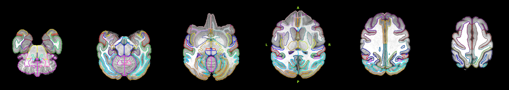
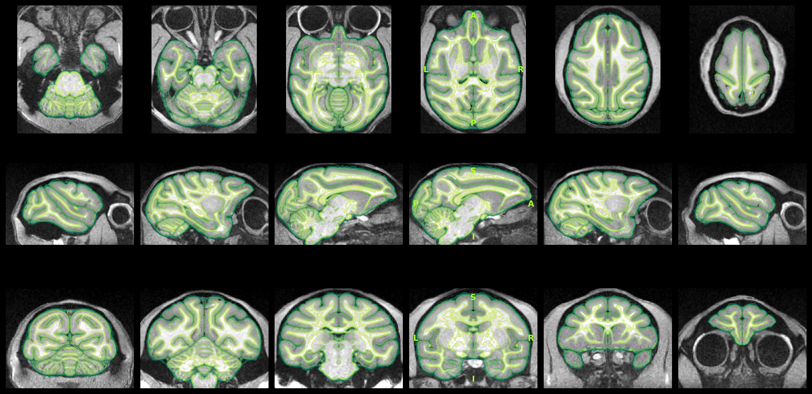
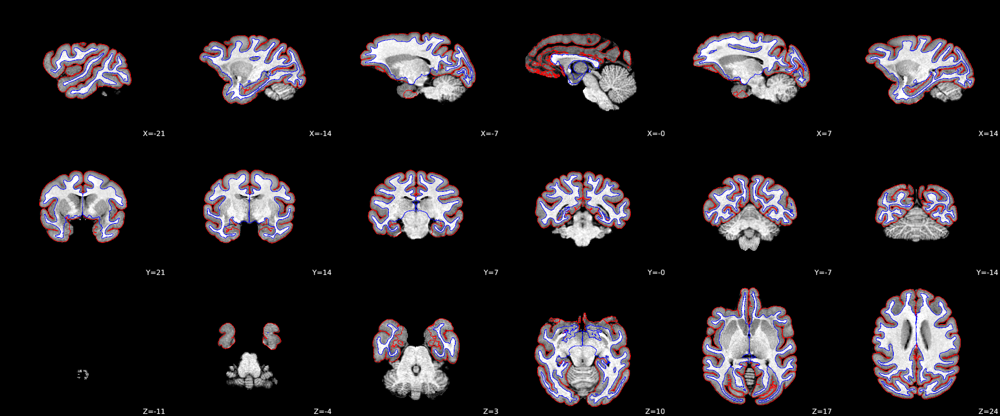

Summary
- Subject ID
- example
- T1w images
- Acquired 2 · After synthesis 1
- T2w images
- Acquired 1
- Functional images
- 2
- Output spaces
- NMT2Sym
- Surface reconstruction
- Run by Brainana
Detailed processing parameters: ./nextflow_reports/config.yaml.
Structural
ses-001

Structural to template registration

Surface reconstruction tissue segmentation

ses-001run-1


Functional
ses-001
ses-001task-restrun-1


ses-001task-restrun-2
About
This report was generated by brainana version 1.1.0.
Generated on: 2026-06-25 12:07:40
Methods
Results included in this manuscript come from preprocessing performed using brainana 1.1.0.
Anatomical data preprocessing
T1w preprocessing
T1w images were preprocessed as follows. When multiple T1w images existed per session or subject, a single synthesized T1w was created by rigid coregistration to the first image using ANTs (Avants et al., 2008) and averaging in reference space. The T1w was conformed to template space to ensure better performance of the subsequent steps: first, initial skullstripping was performed using a CNN model fine-tuned from DeepBet (Wang et al., 2021), then rigid registration to the template space brain was performed with FLIRT (FSL; Jenkinson et al., 2002). Brain tissue segmentation and brain mask generation were performed using a CNN fine-tuned from FastSurfer one (Henschel et al., 2020) and trained on macaque brain atlases (CHARM/SARM level 2; Jung et al., 2021). The T1w was corrected for intensity non-uniformity with N4BiasFieldCorrection (Tustison et al., 2010), using the brain mask to restrict the correction. Volume-based spatial registration to the template was performed through translation, rigid, affine, and non-linear (SyN) registration with antsRegistration (ANTs; Avants et al., 2008). For the non-linear stage, FireANTs (Jena et al., 2024; Jena et al., 2026) was used when available. Cortical surface reconstruction was performed using a modified FastSurfer pipeline (Henschel et al., 2020) adapted for non-human primates, based on the FreeSurfer surface reconstruction framework (Dale et al., 1999).
T2w preprocessing
As with the T1w, when multiple T2w images existed per session or subject, a single synthesized T2w was created. The T2w was rigidly coregistered to the T1w space using ANTs (Avants et al., 2008).
Functional data preprocessing
fMRI data were preprocessed as follows. Slice timing correction was applied using AFNI 3dTshift (Cox, 1996; Cox & Hyde, 1997). Head motion correction was performed with mcflirt (FSL; Jenkinson et al., 2002). When multiple fMRI runs existed within a session, within-session coregistration was performed using ANTs (Avants et al., 2008) by registering each run's mean image to a reference run. The fMRI mean image was conformed to target space to improve downstream alignment: first, initial skullstripping was performed using a CNN model fine-tuned from DeepBet (Wang et al., 2021); then the image was rigidly registered to the target using FLIRT (FSL; Jenkinson et al., 2002). The same conform transform was then applied to the full 4D BOLD series. The mean fMRI data was registered to the selected anatomical reference using ANTs (rigid and affine; Avants et al., 2008); for non-linear registration, FireANTs (Jena et al., 2024; Jena et al., 2026) was used. The resulting transforms were applied to the full 4D BOLD and brain mask in sequence. Runs with fewer than 15 volumes skipped motion correction;
References
- Avants, B. B., Epstein, C. L., Grossman, M., & Gee, J. C. (2008). Symmetric diffeomorphic image registration with cross-correlation: Evaluating automated labeling of elderly and neurodegenerative brain. Medical Image Analysis, 12(1), 26–41. https://doi.org/10.1016/j.media.2007.06.004
- Cox, R. W. (1996). AFNI: Software for analysis and visualization of functional magnetic resonance neuroimages. Computers and Biomedical Research, 29(3), 162–173. https://doi.org/10.1006/cbmr.1996.0014
- Cox, R. W., & Hyde, J. S. (1997). Software tools for analysis and visualization of fMRI data. NMR in Biomedicine, 10(4–5), 171–178. https://doi.org/10.1002/(SICI)1099-1492(199706/08)10:4/5<171::AID-NBM453>3.0.CO;2-L
- Dale, A. M., Fischl, B., & Sereno, M. I. (1999). Cortical surface-based analysis: Segmentation and surface reconstruction. NeuroImage, 9(2), 179–194. https://doi.org/10.1006/nimg.1998.0395
- Henschel, L., Conjeti, S., Estrada, S., Diers, K., Fischl, B., & Reuter, M. (2020). FastSurfer: A fast and accurate deep learning based neuroimaging pipeline. NeuroImage, 219, 117012. https://doi.org/10.1016/j.neuroimage.2020.117012
- Jena, R., Chaudhari, P., & Gee, J. C. (2024). FireANTs: Adaptive Riemannian optimization for multi-scale diffeomorphic registration. Nature Communications.
- Jena, R., Zope, V., Chaudhari, P., & Gee, J. C. (2026). A scalable distributed framework for multimodal GigaVoxel image registration. The Fourteenth International Conference on Learning Representations. https://openreview.net/forum?id=8dLexnao2h
- Jenkinson, M., Bannister, P., Brady, M., & Smith, S. (2002). Improved optimization for the robust and accurate linear registration and motion correction of brain images. NeuroImage, 17(2), 825–841. https://doi.org/10.1006/nimg.2002.1132
- Jung, B., Taylor, P. A., Seidlitz, J., Suber, A., Donahue, C. J., Coalson, T., Glasser, M. F., Shafer, A. T., Van Essen, D. C., Dienes, T., Earl, E., Feczko, E., Fair, D. A., & Donahue, J. N. (2021). A comprehensive macaque fMRI pipeline and hierarchical atlas. NeuroImage, 235, 117997. https://doi.org/10.1016/j.neuroimage.2021.117997
- Tustison, N. J., Avants, B. B., Cook, P. A., Zheng, Y., Egan, A., Yushkevich, P. A., & Gee, J. C. (2010). N4ITK: Improved N3 bias correction. IEEE Transactions on Medical Imaging, 29(6), 1310–1320. https://doi.org/10.1109/TMI.2010.2046908
- Wang, X., Li, X., & Xu, T. (2021). U-net model for brain extraction: Trained on humans for transfer to non-human primates. NeuroImage, 235, 118001. https://doi.org/10.1016/j.neuroimage.2021.118001